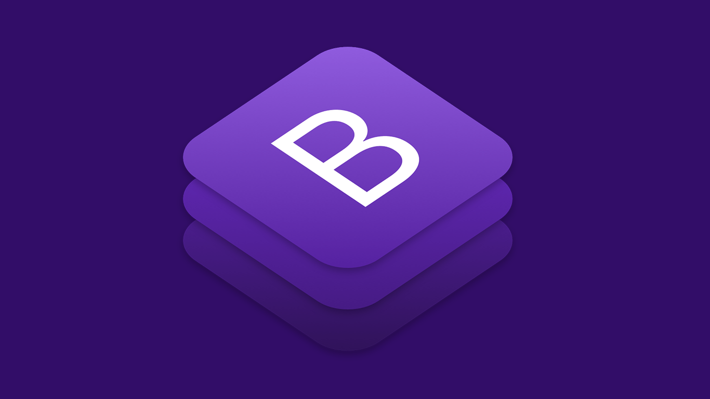
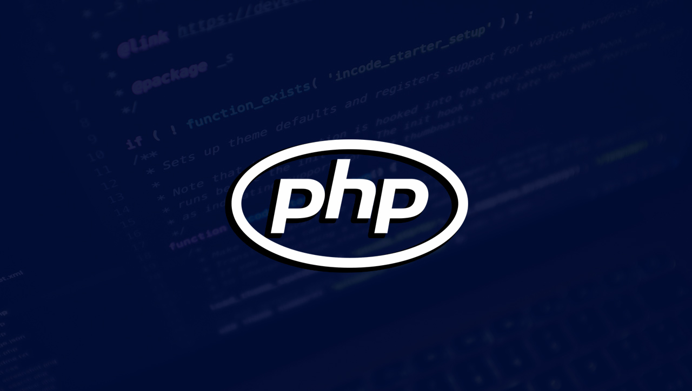

Bootstrap
Bootstrap is the most popular HTML, CSS, and JS framework for developing responsive, mobile first projects on the web.
With Bootstrap, you get extensive and beautiful documentation for common HTML elements, dozens of custom HTML and CSS components, and awesome jQuery plugins.
Java

Java is a general-purpose computer programming language that is concurrent, class-based, object-oriented, and specifically designed to have as few implementation dependencies as possible. It is intended to let application developers "write once, run anywhere" (WORA), meaning that compiled Java code can run on all platforms that support Java without the need for recompilation.
Swift

Swift is a general-purpose, multi-paradigm, compiled programming language developed by Apple Inc. for iOS, macOS, watchOS, tvOS, and Linux. Swift is designed to work with Apple's Cocoa and Cocoa Touch frameworks and the large body of extant Objective-C (ObjC) code written for Apple products.
PHP
PHP (recursive acronym for PHP: Hypertext Preprocessor) is a widely-used open source general-purpose scripting language that is especially suited for web development and can be embedded into HTML.
JavaServer Pages (JSP)

C is a general-purpose programming language that is extremely popular, simple and flexible. It is machine-independent, structured programming language which is used extensively in various applications. C was the basic language to write everything from operating systems (Windows and many others) to complex programs like the Oracle database, Git, Python interpreter and more.